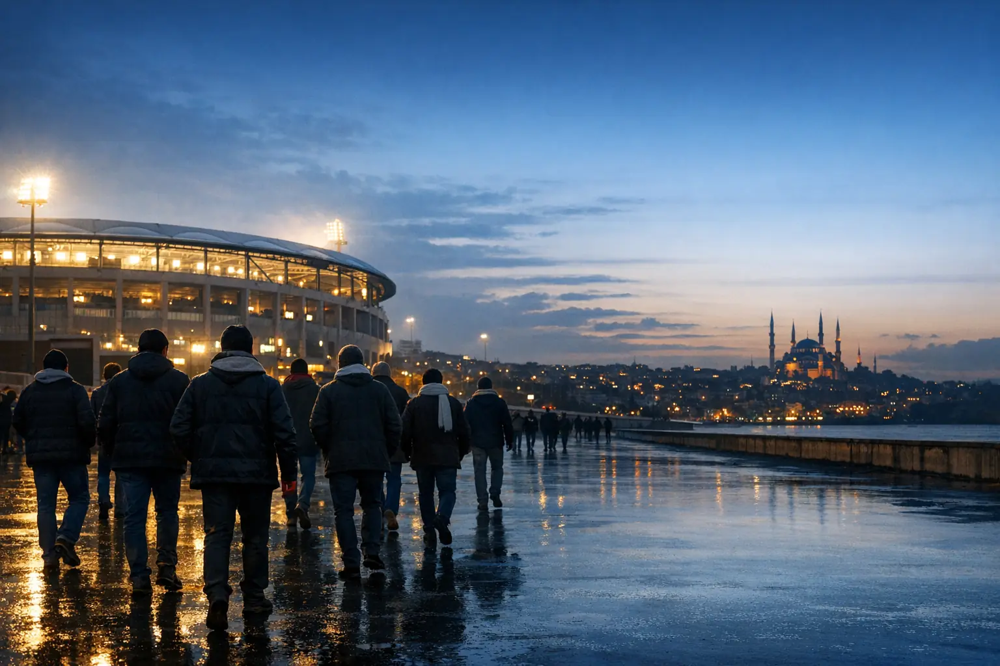
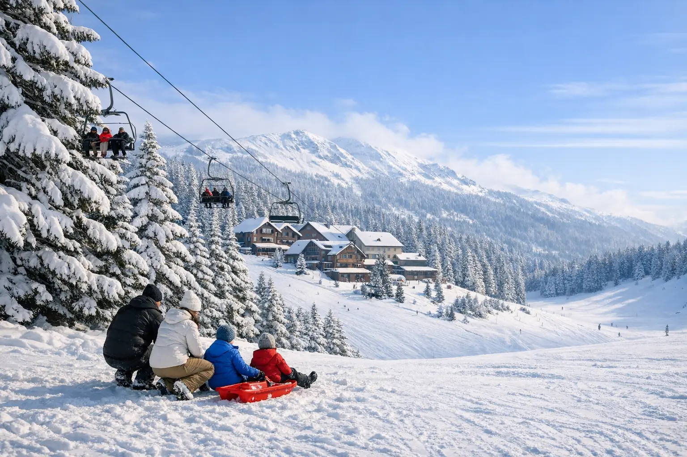

Pela primeira vez, os olhos dos fãs do futebol espanhol se voltam para a Turquia: Istambul recebe a Supercopa da Espanha 2027, conforme anunciado, com Barcelona, Atlético Madrid, Real Madrid e Real Sociedad. A final pode ser um clássico entre Barcelona e Real Madrid, se os dois vencerem as semifinais.
Mas a viagem do torneio é maior do que noventa minutos. Tem voo, hotel e deslocamentos numa cidade grande, jogos que começam às dez da noite num inverno frio e dias livres entre as partidas que merecem ser bem aproveitados. Reunimos neste guia tudo o que você precisa, passo a passo: datas, estádios e como chegar a eles, o ingresso oficial, a hospedagem, o plano do dia do jogo, noites no Bósforo, passeios e lugares que recomendamos, e como ficamos ao seu lado da primeira mensagem até você voltar para casa.
Avisamos desde já que os detalhes do torneio vêm do órgão organizador, e datas, estádios ou horários dos jogos podem mudar. Por isso acompanhamos as novidades o tempo todo e as confirmamos com você na reserva.
O torneio em resumo
- A cidade: Istambul, Turquia.
- As equipes: Barcelona, Atlético Madrid, Real Madrid, Real Sociedad.
- O formato: duas semifinais e uma final, ou seja, três jogos em cinco dias.
- Os estádios: Şükrü Saracoğlu em Kadıköy, Tüpraş em Beşiktaş e RAMS Park em Sarıyer.
- Horário do apito inicial: 22:00 no horário de Istambul (20:00 no horário da Espanha).
- Depois do torneio: o mês sagrado do Ramadã começa por volta de 8 de fevereiro de 2027.
Datas da Supercopa da Espanha 2027 em Istambul
Estas datas seguem o que foi anunciado até a data de atualização do artigo:
| Jogo | As duas equipes | Data e estádio |
|---|---|---|
| Primeira semifinal | Barcelona × Atlético Madrid | Terça-feira, 2 de fevereiro de 2027 • 22:00 — estádio Şükrü Saracoğlu (Kadıköy) |
| Segunda semifinal | Real Sociedad × Real Madrid | Quarta-feira, 3 de fevereiro de 2027 • 22:00 — Tüpraş Stadyumu (Beşiktaş) |
| Final | Os vencedores das semifinais | Sábado, 6 de fevereiro de 2027 • 22:00 — RAMS Park |
Os jogos terminam perto da meia-noite. Por isso recomendamos reservar uma noite extra depois de cada jogo a que você quiser assistir, especialmente na noite da final, para não ficar preso a um voo em horário apertado.
A Arábia Saudita sediou várias edições da Supercopa da Espanha nos últimos anos, mas a edição de 2027 coincide com a Copa da Ásia 2027, sediada pelo reino. Por isso o torneio foi transferido para Istambul desta vez, conforme anunciado.
Os três estádios e como chegar a eles

Cada jogo tem o seu estádio, e os três ficam em regiões diferentes da cidade. Por isso escolhemos o hotel de acordo com o jogo a que você vai assistir e organizamos um traslado privativo de ida e volta.
Estádio Şükrü Saracoğlu — Kadıköy (primeira semifinal)
Estádio do Fenerbahçe, no lado asiático da cidade, com capacidade para cerca de 47 mil espectadores. Fica perto da estação Söğütlüçeşme, onde se encontram o trem Marmaray e o Metrobus, e a uma curta caminhada do mercado de Kadıköy e do cais das balsas. A região é animada e cheia de restaurantes e cafés, ótima para um jantar cedo antes do jogo.
Estádio Tüpraş — Beşiktaş (segunda semifinal)
Estádio do Beşiktaş, na margem europeia do Bósforo, ao lado do Palácio de Dolmabahçe, com capacidade para cerca de 42 mil espectadores. Dá para chegar a pé desde a Praça Taksim em cerca de um quarto de hora, ou pela estação Kabataş, onde terminam o bonde e o funicular que vem de Taksim. A localização central o torna o mais fácil dos três estádios.
Estádio RAMS Park — Sarıyer (a final)
Estádio do Galatasaray, no bairro de Seyrantepe, ao norte da cidade, o maior dos três, com cerca de 53 mil lugares. Fica a cerca de dez quilômetros de Taksim e é servido pela linha de metrô M2, mas as vias do entorno ficam muito congestionadas antes e depois do jogo. Por isso, especificamente na noite da final, recomendamos um traslado privativo com saída antecipada e um ponto de encontro claro depois do apito final.
Você encontra as datas, os estádios e o modelo 3D das arquibancadas na página de ingressos da Supercopa da Espanha 2027, e a atualizamos sempre que houver novidades sobre o torneio.
O ingresso oficial: como obtê-lo com segurança
- Compre só pelo canal oficial: os canais autorizados pelo organizador, diretamente ou com a ajuda de uma agência de viagens que trabalhe com transparência. Evite vendedores desconhecidos nas redes sociais.
- Ingresso no seu nome: os ingressos deste tipo de torneio costumam ser nominais, e o passaporte ou documento de identidade pode ser pedido na entrada.
- Vincule as reservas ao ingresso: não pague o voo e o hotel antes de o ingresso estar definido, ou escolha reservas com cancelamento flexível.
- Atenção ao lugar do assento: as arquibancadas das torcidas de cada time costumam ser separadas, então escolha o assento que combina com a sua preferência.
A OYA Tourism é uma agência de viagens independente. Não somos um órgão oficial ligado à federação espanhola nem a qualquer clube, e não vendemos ingressos. Ajudamos você a comprar o seu ingresso pelo canal oficial, no seu nome e pelo preço oficial, com uma taxa de serviço declarada, e explicamos as condições por escrito antes de qualquer pagamento. Se preferir comprá-lo por conta própria, orientamos você passo a passo e organizamos o restante da viagem.
Onde se hospedar em Istambul durante o torneio
A regra de ouro: hospede-se perto do estádio do seu jogo ou perto de uma linha de transporte principal, e não apenas perto de um ponto turístico. O trânsito no fim da tarde dos dias de jogo pode tornar a viagem de carro longa, enquanto o metrô continua mais rápido e mais confiável.
| Região | Por que serve ao torcedor? | Para quem é indicada |
|---|---|---|
| Kadıköy e Üsküdar | Mais perto do estádio da primeira semifinal, no lado asiático, com balsas para o lado europeu | Quem vai ao jogo Barcelona x Atlético Madrid |
| Beşiktaş e Taksim | A poucos minutos do Estádio Tüpraş e no coração da vida noturna da cidade | Quem vai ao jogo Real Madrid x Real Sociedad |
| Şişli e Maslak | Na linha de metrô M2 que leva ao RAMS Park, e perto de shopping centers | Quem vai à final ou ao torneio inteiro |
| Sultanahmet | Ao lado de Santa Sofia e da Mesquita Azul, com ligação de bonde | Quem dá prioridade aos passeios turísticos |
Esperamos que a procura por hotéis aumente na semana do torneio, com a chegada de torcedores da Espanha e de outros países; por isso é aconselhável reservar cedo, com política de cancelamento flexível. Indicamos a opção adequada ao número de pessoas e ao orçamento pelo serviço de reserva de hotéis.
Chegada a Istambul
- Escolha o aeroporto certo: o Aeroporto de Istambul fica no lado europeu e o Aeroporto Sabiha Gökçen no lado asiático, e a distância entre eles é grande. Se você for assistir só à primeira semifinal, Sabiha Gökçen pode ficar mais perto do seu hotel.
- Reserve o voo cedo: os preços costumam subir perto da data, e há voos diretos da maioria das cidades árabes. Comparamos as opções para você na página de reserva de passagens aéreas.
- Traslado do aeroporto: o nosso motorista espera por você no saguão de desembarque e leva você ao hotel num carro privativo, sem procurar táxi nem pechinchar depois de um voo longo. Os detalhes do serviço estão na página de traslado do aeroporto.
- Fique conectado: os nossos pacotes do torcedor incluem um chip de celular turco, para que o seu telefone fique conectado para mapas, ingresso e contato conosco desde o momento da chegada.
- Visto de entrada: varia conforme a sua nacionalidade; algumas nacionalidades árabes entram sem visto, e outras precisam de e-Visa ou de visto da embaixada. Consulte o guia de visto da Turquia para árabes antes de reservar o voo.
O plano do dia do jogo, passo a passo
- Dia tranquilo: mantenha os passeios do dia do jogo leves e perto do hotel, porque a partida termina tarde.
- Almoço tardio ou jantar cedo: faça sua refeição antes de sair, porque as filas ao redor dos estádios são longas e as opções de comida lá dentro são limitadas.
- Saia cedo: conte de duas a três horas antes do apito inicial para chegar e passar pela revista de segurança.
- Leve só o necessário: passaporte ou documento de identidade, o ingresso no celular com a bateria carregada, e evite bolsas grandes, pois podem ser proibidas.
- Vista-se para o frio: as arquibancadas abertas são frias em fevereiro, então leve casaco, luvas e cachecol.
- Combine um ponto de encontro: defina com o seu grupo e com o motorista um local claro para se encontrarem depois do jogo, pois o sinal do celular às vezes enfraquece no meio da multidão.
- Volte com calma: a saída do estádio é lenta, e o seu motorista fica em contato com você até levá-lo de volta ao hotel.
Mais do que um jogo: o que podemos organizar para você
بين مباراتي نصف النهائي والنهائي يومان كاملان، وهي فرصة لتعيش إسطنبول كما يجب. هذه أبرز التجارب التي نرتبها لضيوف البطولة، ونختار منها معك ما يناسب مجموعتك وميزانيتك:
Noite no Bósforo

A melhor maneira de ver Istambul é pela água. Você pode escolher um jantar marítimo à noite com vista para os palácios e as pontes iluminados, um iate privado para a sua família ou o seu grupo, conforme a disponibilidade, ou um passeio de barco durante o dia entre Eminönü e a Fortaleza de Rumeli. Na proposta explicamos o tipo de noite, a comida e a duração antes da reserva, e escolhemos para as famílias opções adequadas.
Passeios pela cidade com motorista que fala inglês
المدينة القديمة: آيا صوفيا والجامع الأزرق وقصر توبكابي وصهريج البازيليك والبازار الكبير، مع مرشد مرخص يتحدث العربية عند الطلب. وجولة البوسفور بالسيارة بين أورتاكوي وبيبك وتل تشامليجا على الجانب الآسيوي. اطّلع على خدمة السائق الخاص والجولات اليومية.
Viagem à neve em Uludağ

O início de fevereiro costuma ser temporada de neve no monte Uludağ. Um passeio de um dia a Bursa e Uludağ reúne teleférico, brincadeiras na neve e os famosos pratos de Bursa, com volta a Istambul à noite. Se você quiser mais sossego, Sapanca e Maşukiye, com a sua natureza de inverno, são uma opção próxima. Também é possível combinar os jogos com o programa Istambul e Uludağ no inverno, 6 dias.
Ilhas dos Príncipes e dias de descanso
A ilha de Büyükada, com suas casas de madeira e ruas sem carros, é ideal para um dia tranquilo depois da noite de jogo. O motorista leva você até o cais da balsa e espera na volta.
Compras
O Grande Bazar e o Bazar das Especiarias para presentes e doces (o Grande Bazar fecha aos domingos), e shoppings modernos como İstinye Park, Zorlu Center e Cevahir. Organizamos um dia de compras com carro privativo que leva você e suas sacolas entre os lugares sem esforço.
Para quem ama futebol
Os grandes clubes de Istambul, Fenerbahçe, Beşiktaş e Galatasaray, têm museus que contam a sua história, e as visitas podem ser organizadas conforme os horários de funcionamento, que podem mudar nos dias de jogo. Para quem gosta de fotografar, os três estádios parecem completamente diferentes nas noites de jogo.
Lugares que recomendamos
- للإطلالات: تل بيير لوتي في أيوب مع التلفريك فوق القرن الذهبي، وتل تشامليجا على الجانب الآسيوي، وبرج غلطة.
- Para caminhadas à noite: a Avenida İstiklal com seu bonde histórico, a orla de Kadıköy e Moda, e a praça de Ortaköy sob a ponte do Bósforo.
- Para a comida de rua: sanduíche de peixe (balık ekmek) no cais de Eminönü, simit com chá, e kumpir e waffle em Ortaköy.
- Para o café da manhã turco: a rua dos restaurantes de café da manhã em Beşiktaş, lugar perfeito para a manhã depois do jogo.
- Para os doces: baklava e künefe turcos em casas tradicionais como Karaköy Güllüoğlu e Hafız Mustafa.
- Para bebidas de inverno: salep quente e boza na histórica Vefa Bozacısı, prazeres de Istambul no frio.
- Para a oração: há mesquitas em todos os bairros, e a sexta-feira, 5 de fevereiro, é uma oportunidade de fazer a oração de sexta-feira numa mesquita histórica, como a Mesquita de Süleymaniye ou a Mesquita Azul.
A comida halal está disponível na maioria dos restaurantes de Istambul. Se quiser, sugerimos restaurantes que combinam com o seu gosto e o seu orçamento e reservamos a mesa, principalmente antes do jogo, quando os restaurantes perto dos estádios lotam.
Ao seu lado da primeira mensagem até a sua volta
O que mais preocupa quem viaja para um grande evento é: a quem recorro se algo mudar? Por isso trabalhamos com os hóspedes do torneio de forma clara, e a nossa equipe que atende em português fica com você em cada etapa:
| Fase | O que fazemos por você |
|---|---|
| Antes da viagem | Proposta detalhada por escrito, confirmação de cada reserva por escrito, lista dos documentos necessários, acompanhamento do seu ingresso oficial e aviso imediato de qualquer atualização oficial nas datas. |
| Na chegada | Motorista esperando no saguão de desembarque, chip de celular turco e o programa dos seus dias enviado pelo WhatsApp. |
| Durante a estadia | Um único número de WhatsApp de uma equipe que acompanha você todos os dias, lembra dos horários dos passeios e organiza qualquer ajuste que você pedir. |
| Noite do jogo | Instruções por escrito com o horário de saída, o portão e o ponto de encontro, e um motorista em contato com você até levá-lo de volta ao hotel. |
| Em emergências | Ajudamos você a chegar à farmácia ou ao hospital mais próximo e a falar com as autoridades competentes caso perca algo. |
| Dia da volta | Traslado ao aeroporto no horário certo, e teremos prazer em ouvir a sua opinião depois da viagem. |
Nossa equipe está disponível todos os dias, das 9h às 23h no horário de Istambul, e nas noites de jogo o seu motorista fica em contato com você até você chegar ao hotel.
Roteiros sugeridos para a viagem do torneio
O torneio inteiro em 7 dias
| Dia | Roteiro sugerido |
|---|---|
| Segunda-feira, 1 de fevereiro | Chegada e traslado do aeroporto, depois jantar no Bósforo à noite |
| Terça-feira, 2 de fevereiro | Passeio pela cidade antiga de manhã, depois a primeira semifinal em Kadıköy |
| Quarta-feira, 3 de fevereiro | Manhã tranquila e café da manhã turco, passeio de carro pelo Bósforo, depois a segunda semifinal em Beşiktaş |
| Quinta-feira, 4 de fevereiro | Passeio de um dia a Bursa e ao monte Uludağ, para ver a neve |
| Sexta-feira, 5 de fevereiro | Oração de sexta-feira numa mesquita histórica, depois dia livre de compras |
| Sábado, 6 de fevereiro | Dia tranquilo, depois a final no RAMS Park |
| Domingo, 7 de fevereiro | Despedida com traslado ao aeroporto, ou um dia extra nas Ilhas dos Príncipes |
Um jogo em 4 dias
O primeiro dia para a chegada e a noite no Bósforo, o segundo para o passeio pela cidade e depois o jogo à noite, o terceiro para compras ou para o passeio na neve, e o quarto para a volta. É a opção mais indicada para quem acompanha um só time ou viaja numa folga curta.
Para famílias com crianças
Um jogo costuma bastar, pois partidas à noite no frio cansam os pequenos. Reserve os demais dias para a neve em Uludağ, as Ilhas dos Príncipes e o parque Miniatürk, com um hotel perto do transporte público e carro privativo durante toda a estadia.
Informações práticas
- O clima: fevereiro é um dos meses mais frios de Istambul, e a temperatura costuma variar entre alguns graus acima de zero e cerca de dez graus, com chuvas frequentes e possibilidade de neve. Leve um guarda-chuva pequeno e um calçado confortável que não se estrague na chuva.
- Transporte público: o cartão Istanbulkart funciona no metrô, no bonde, no Metrobus, nas balsas, nos ônibus e no trem Marmaray.
- Moeda e pagamento: a lira turca é a moeda local, os cartões são aceitos na maioria dos restaurantes e lojas, e as taxas de câmbio nas casas de câmbio da cidade costumam ser melhores do que no aeroporto.
- Seguro: recomendamos um seguro-viagem que cubra tratamento médico durante toda a viagem.
- Ramadã: o mês de Ramadã de 1448 começa por volta de 8 de fevereiro de 2027. Se você prefere voltar antes do início, reserve o voo de volta cedo, porque a procura aumenta nesses dias.
- O clima no estádio: torça pelo seu time com entusiasmo, evite confusão com a torcida do outro time e siga as instruções da segurança.
Checklist antes de viajar
- Passaporte válido e visto de entrada, se a sua nacionalidade precisar.
- Confirmação do ingresso oficial no seu nome e conhecimento das regras de entrada no estádio.
- Reserva do voo e do hotel, com uma noite extra depois do jogo.
- Confirmação do traslado do aeroporto e do transporte até o estádio e de volta.
- Seguro-viagem e roupas quentes de inverno.
- O número de WhatsApp da OYA salvo no seu celular.
Como reservar a viagem do torneio com a OYA?
- Escreva para nós pelo WhatsApp: o número de viajantes, os jogos a que você quer assistir, a sua cidade e o seu orçamento aproximado.
- Receba a sua proposta por escrito: hotel, deslocamentos, passeios e noites sugeridos, com a taxa de serviço clara.
- Confirme a reserva: reservamos o que você aprovou e ajudamos você a comprar o seu ingresso pelo canal oficial e no seu nome.
- Viaje e aproveite: acompanhamos você da chegada até a volta.
Os pacotes do torcedor prontos para cada jogo e para o torneio inteiro estão na página da Supercopa da Espanha 2027, e cada pacote pode ser totalmente ajustado. Envie a sua mensagem hoje: cada viagem… uma história, e a viagem do torneio merece ser contada.